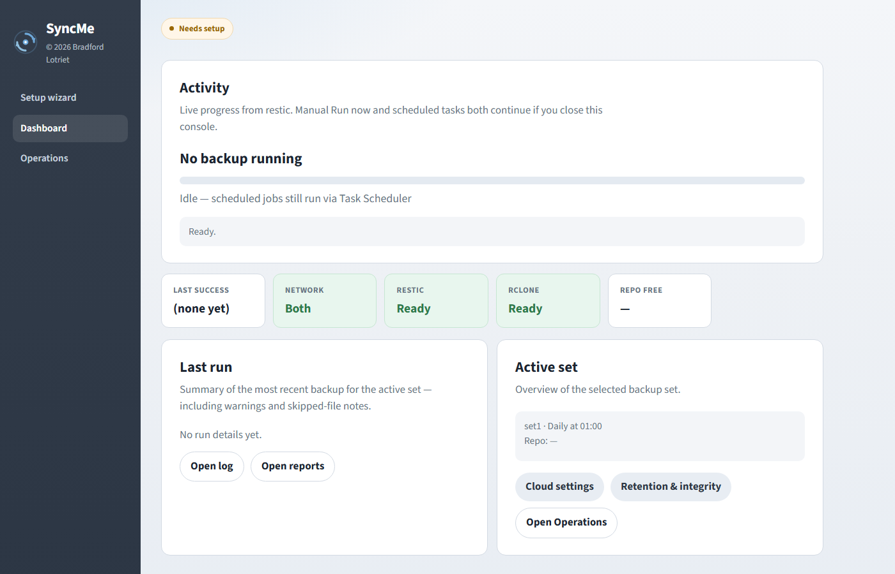
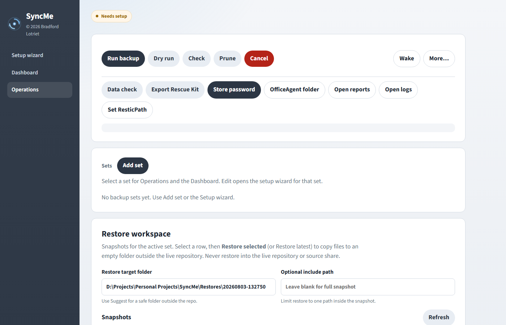
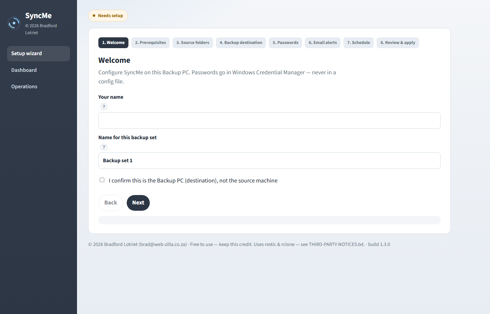

restic
Encrypted, deduplicated, versioned snapshots — prune, check, and restore.
HTML console for restic-powered file backup · v1.3.0
A simple frontend for restic, rclone, and Task Scheduler — pull LAN or Tailscale shares to a Backup PC. Browse snapshots, export a Rescue Kit, and harden repos with append-only policy and restore drills.

File-level backup managed from a browser — not a cloud SaaS product.
SyncMe runs only on the Backup PC (Windows 10/11 or Windows Server). Source machines only need shared folders — and Tailscale when they are offsite.
Open the HTML5 console on localhost, configure backup sets, schedule them in Windows Task Scheduler, and let restic create encrypted, deduplicated, versioned snapshots. Optional cloud destinations use rclone as restic’s backend (OneDrive / Google Drive OAuth).
No PHP. No database. No agent installed on every source PC.
SyncMe is an orchestration frontend — PowerShell host + HTML console — not a replacement for restic or rclone.
Encrypted, deduplicated, versioned snapshots — prune, check, and restore.
Used only as restic’s cloud remote (e.g. OneDrive). Not folder Sync/Bisync in this release.
Optional VSS helper on the source PC so locked Office/database files can be read during backup.
Reach offsite SMB shares so the Backup PC can pull sources over the internet.
Host: PowerShell 5.1 HttpListener on 127.0.0.1:17845 · UI: HTML5 + vanilla JS ·
Schedule: Windows Task Scheduler · Secrets: Credential Manager · See THIRD-PARTY-NOTICES.txt in the package.
Expand a topic to read more — same collapsible style as the console.
The localhost console (v1.3.0) — dashboard, operations with browse & Rescue Kit, and setup wizard.


Honest boundaries so you know what SyncMe is — and is not.
127.0.0.1 on the Backup PC. It is not a multi-tenant SaaS
and is not meant to be exposed to the internet. Use RDP when managing a Server.
Config.ps1 and not only on the Backup PC.
Windows Credential Manager keeps the machine able to run backups; your vault copy is for disaster recovery if that PC dies.
Use Operations → Export Rescue Kit for printable recovery instructions (password stays out of the file).
Short answers. Full detail is in the User Guide.
SyncMe-….zip or the setup package from
Build-SyncMePackage.ps1 / Build-SyncMeSetup.ps1).
Unzip on the Backup PC, open START-HERE.txt, then SyncMe.bat.
Docs and FAQ live here at www.syncme.co.za.
Use it for personal or business backup. Keep the author credit.
SyncMe is free to use, copy, and share for personal or business backup purposes. You may deploy it for yourself and for others.
Keep the copyright notice and contact details visible. SyncMe is provided AS IS, without warranty — save the restic password safely, verify backups and restores, and secure credentials.
Contact: brad@web-zilla.co.za
View on GitHub v1.3.0 · Private while we finish the app — public releases will include downloadable zip assets.